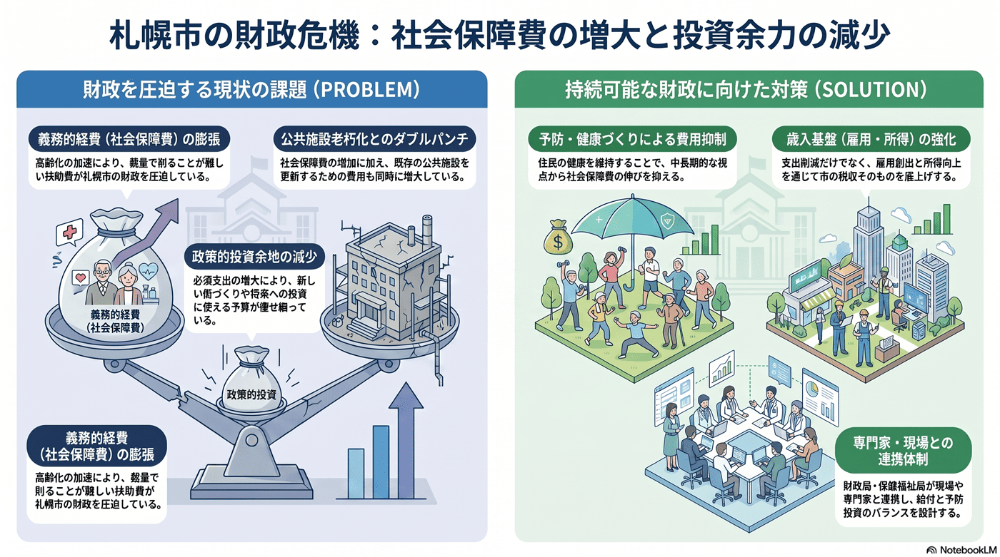

財政・行政
10年以内
社会保障費（扶助費）の増加
高齢化に伴い、義務的に支出する社会保障費が膨らみ続ける。

背景
社会保障費は裁量で削りにくい義務的経費であり、高齢化の加速局面で増え続ける。義務的経費が膨らむほど、政策的な投資に回せる余地が痩せていく。
事実
- 札幌市では今後、社会保障費の増加が見込まれている。
- 同時に老朽化した公共施設の更新費の増加も見込まれている。
解釈
社会保障費は裁量で削りにくい義務的経費であり、増え続けると政策的な投資に回せる余地が痩せていく。高齢化の加速局面でこの圧力は強まる。
提案
- 予防・健康づくりによる中長期の費用抑制。
- 歳入基盤（雇用・所得）の強化との両輪での対応。
検討体制・メンバー
札幌市財政局と保健福祉局が連携する。検討会には社会保障・医療経済の専門家、医療・介護の現場、予防・健康づくりの担当、当事者代表を加え、給付の持続性と予防投資のバランスを設計する。
AIノート
AIの貢献度は中。レセプト等のデータ分析で予防・重症化防止の効果が高い対象を見つけ、健康づくりを後押しできる。給付の不正・重複チェックの効率化にも有効だが、給付水準は制度設計と合意の問題で、AIは支援役。